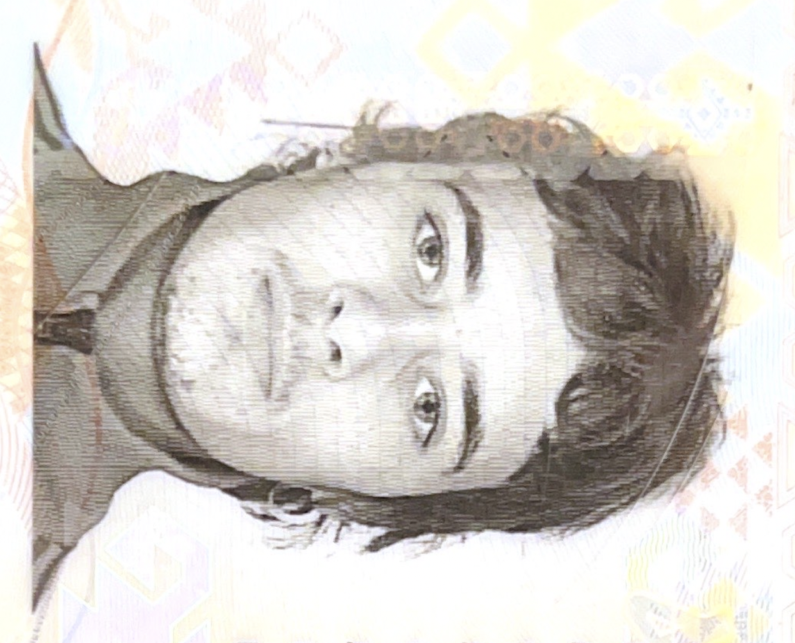

ABOUT ME

My name is Yan Abadjiev. I am 21 years old. I was born in Sofia, Bulgaria. I am currently in the third year of my Interactive Media Design bachelor at The Royal Academy Of Art in The Hague.
In my artistic practices, my fascination for storytelling is pulling me in the direction of trying to translate my thoughts, memories, fascinations, opinions, sensations into narratives that an audience can then follow, become part of and eventually hopefully feel. The art that I make is an amalgamation of impressions of feelings that I get from certain little aspects or moments in my life that intrigue me enough to dig deeper into them, explore them, analyse them, question them in order to better understand their origin.